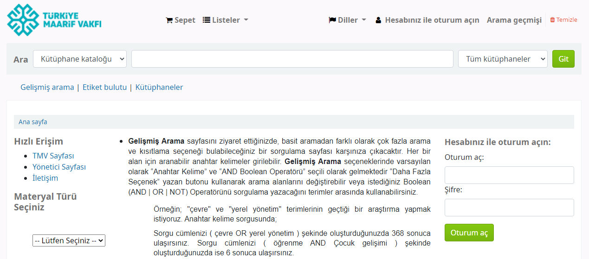

Tasarım önizlemesi — örnek verilerle. Katalog araması ve formlar burada çalışmaz.
Türkiye Maarif Vakfı Kütüphaneleri
Üye Girişi
Kütüphane
Hakkımızda
Kütüphane Kuralları
Haberler ve Duyurular
Kaynaklar
Maarif Yayınları
Kütüphane Kataloğu
Açık Erişim
Hizmetlerimiz
Hizmet Detayları
Satın Alma Önerisi
Kütüphanelerimiz
İletişim
Anasayfa
/
Maarif Yayınları
/
Uluslararasi Maarif Dergisi 1
Uluslararasi Maarif Dergisi 1

2021
Yayın açıklaması.
PDF olarak oku